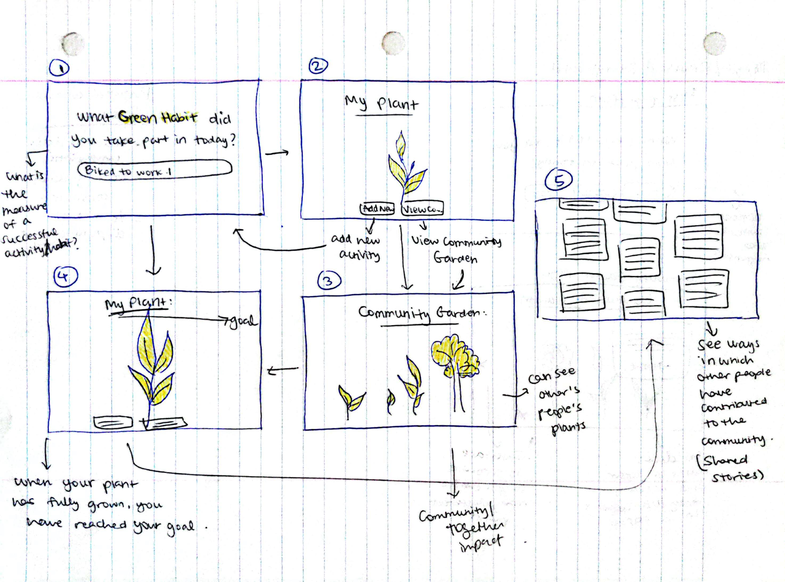

Initial frames:
These were the initial frames I drafted during the 15-minute sketch. They represent a raw idea, with little refinement.
Revised frames 1 and 3 based on feedback:
On sharing this design with my peers, I received the following feedback:
-
It might be difficult to gauge what a successful 'Green Habit' looks like. How will we know that the text entered by the user makes sense? How will we know if it is impactful?
-
Frames 3 and 5 can be combined into one: When you click or hover on a plant in the community garden, it can show the activity associated with it, along with the name of the person who completed the activity. It would be engaging to have a popup with this information.
-
Tracking daily consumption: A successful activity would include using organic and environmentally safe materials. An unsuccessful activity would include using toxic materials that could cause harm to our ecosystem.
-
Tracking daily commute: A successful activity would be biking, walking, carpooling, or taking public transport to work/school. An unsuccessful activity would be using excessive fuel by driving alone, not utilizing safe transport options, etc.
-
Tracking the amount of disposable household items used (similar to daily consumption): A successful activity would include using reusable plates, utensils, cleaning cloths, etc. An unsuccessful activity would include using disposable plates and utensils, paper towels, tissues, etc.
Detailed storyboard:
After my intial ideation, I developed a detailed storyboard with written notes about how each feature will work.
I added and removed some features as my idea became more refined and the flow of the project took better shape.
In the second round of testing, I got the following feedback:
It would be useful to display quantitative information as well.
Maybe you can include a page with quantitative facts about how we all have helped the
planet together. It will be more motivating for users to know that they have made an
impact along with the community.
To address this piece of feedback, I drew up a final page of "testimonials", or ways
we have impacted the community together. To implement this, I aim to take data from all
the users together for a particular day, and add them together to generate a combined quantity.
I could do this for multiple activities such as recycling, saving communities, and
purchasing safe materials, and display these on the page with the numbers highlighted.
Future Considerations:
I gained some very unique perspectives from testing the storyboards with my peers. Based on the tests, I highlighted some points that I will need to consider in future iterations:
-
What if the activity that the user completed is not one of the options given? The list of options will have to be very comprehensive.
-
What is the "goal" that the plant should grow to? That depends on the type of plant.
-
How many people's plants should show up on the 'Community Garden' page? With many users, it might be complicated to pull a large number of entries from the database.